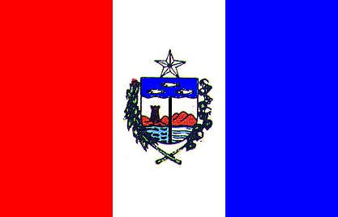

Raquel Macario
Sobre Mim
Olá Meu nome é Raquel, sou de Maceió Alagoas. Atualmente trabalho prestando serviço para lojas online. Sou casada há 15 anos e tenho uma filha de 11 anos. Gosto de ficar em casa, mas também gosto de sair para passar um tempo ao ar livre com minha familia. Meu melhor lazer é assistir series.
Alagoas, Brasil

A história de Alagoas se inicia antes do descobrimento do Brasil pelos portugueses, o estado era povoada pelos índios caetés. A costa do atual Estado de Alagoas, reconhecida desde as primeiras expedições portuguesas, desde cedo também foi visitada por embarcações de outras nacionalidades para o escambo de pau-brasil.